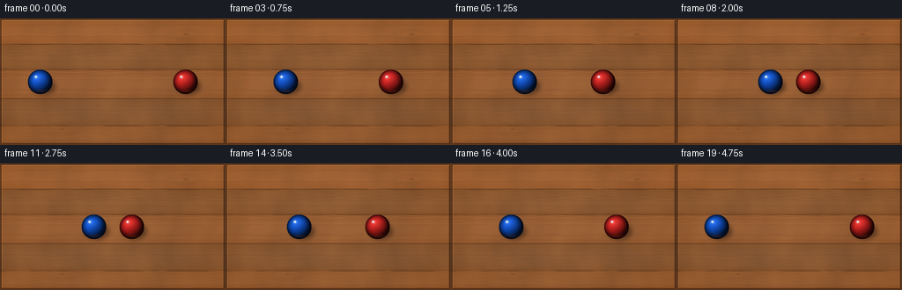
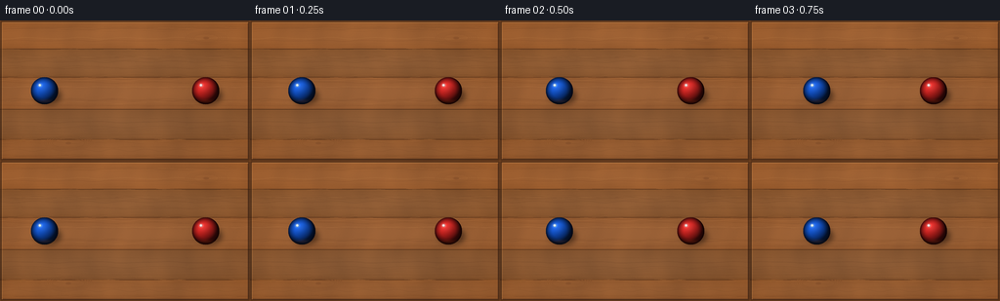

CODING AGENTS AS PIXEL WORLD MODELS
traex/GPT-5.6-Sol · instance_preservation_0025
点击播放 · 原生 RGB 像素
逐轮保存的候选
回放视频、检查图与代码变化。
每份候选均可单独播放。实际图片检查记录在下方工具轨迹中。
候选 01播放与检查图
点击播放 · 原生 RGB 像素


展开代码变化
--- 上一保存版本
+++ 本次保存版本
@@ -0,0 +1,179 @@
+from pathlib import Path
+import json
+import numpy as np
+from PIL import Image, ImageDraw, ImageFilter
+import artifact_io
+
+CASE_DIR = Path(__file__).resolve().parent
+SPEC = json.loads((CASE_DIR / "task_spec.json").read_text())
+W, H = int(SPEC["width"]), int(SPEC["height"])
+N = int(SPEC["frames"])
+S = 4
+WW, HH = W * S, H * S
+rng = np.random.default_rng(20261110)
+
+
+def make_wood():
+ """A warm, top-lit oak tabletop seen square-on from above."""
+ yy, xx = np.mgrid[0:HH, 0:WW].astype(np.float32)
+ x, y = xx / S, yy / S
+
+ # Five broad horizontal boards, each with its own warm oak tone.
+ seams = np.array([0, 29, 58, 91, 122, 144], dtype=float)
+ board_tints = np.array([[11, 4, -3], [-5, -2, -3], [7, 3, -1],
+ [-8, -3, -2], [5, 2, -2]], dtype=float)
+ base = np.zeros((HH, WW, 3), dtype=np.float32)
+ for j in range(5):
+ mask = (y >= seams[j]) & (y < seams[j + 1])
+ # Slight cylindrical highlight across each planed plank.
+ local = (y - seams[j]) / (seams[j + 1] - seams[j])
+ plank_light = 6.0 * np.sin(np.pi * np.clip(local, 0, 1))
+ for c, val in enumerate((133, 80, 42)):
+ base[..., c][mask] = (val + board_tints[j, c] + plank_light[mask])
+
+ # Fine anisotropic wood grain. Low-amplitude so balls remain the clear subjects.
+ wav = (np.sin(x * 0.058 + np.sin(y * .15) * .8) +
+ .48 * np.sin(x * .135 + y * .042) +
+ .26 * np.sin(x * .31 + np.sin(y * .08) * 1.7))
+ coarse = rng.normal(0, 1, (max(2, HH // 20), max(2, WW // 28))).astype(np.float32)
+ coarse_im = Image.fromarray(np.uint8(np.clip(coarse * 35 + 128, 0, 255))).resize(
+ (WW, HH), Image.Resampling.BICUBIC).filter(ImageFilter.GaussianBlur(9 * S))
+ coarse = (np.asarray(coarse_im).astype(np.float32) - 128) / 12
+ fine = rng.normal(0, 1.25, (HH, WW)).astype(np.float32)
+ grain = 3.1 * wav + coarse + fine
+ base[..., 0] += grain * 1.35
+ base[..., 1] += grain * .82
+ base[..., 2] += grain * .38
+
+ # Broad, natural overhead lighting and a restrained edge vignette.
+ d2 = ((x - W * .48) / (W * .75)) ** 2 + ((y - H * .43) / (H * .9)) ** 2
+ light = 8.5 - 14 * np.clip(d2, 0, 1.4)
+ base += light[..., None]
+ base = np.uint8(np.clip(base, 0, 255))
+ im = Image.fromarray(base, "RGB")
+
+ # Join lines and long, gently wandering pores in the timber.
+ overlay = Image.new("RGBA", (WW, HH), (0, 0, 0, 0))
+ d = ImageDraw.Draw(overlay)
+ for sy in seams[1:-1]:
+ py = int(sy * S)
+ d.line([(0, py), (WW, py)], fill=(52, 27, 13, 105), width=max(1, S))
+ d.line([(0, py + S), (WW, py + S)], fill=(213, 147, 82, 42), width=1)
+
+ grain_rng = np.random.default_rng(873)
+ for _ in range(58):
+ y0 = grain_rng.uniform(4, H - 4)
+ amp = grain_rng.uniform(.15, 1.15)
+ period = grain_rng.uniform(30, 95)
+ phase = grain_rng.uniform(0, 6.28)
+ pts = []
+ for px in range(-2, W + 3, 4):
+ py = y0 + amp * np.sin(px / period * 6.283 + phase) + .22 * np.sin(px * .19 + phase)
+ pts.append((px * S, py * S))
+ alpha = int(grain_rng.integers(9, 23))
+ color = (61, 29, 13, alpha) if grain_rng.random() < .78 else (225, 165, 99, alpha)
+ d.line(pts, fill=color, width=int(grain_rng.choice([1, 1, 2]) * S / 2))
+
+ # A pair of subtle oak knots, integrated into the grain rather than separate objects.
+ for kx, ky, rx, ry in [(211, 18, 13, 4.0), (70, 126, 17, 4.7)]:
+ for q in range(5):
+ box = ((kx - rx - q * 2.0) * S, (ky - ry - q * .75) * S,
+ (kx + rx + q * 2.0) * S, (ky + ry + q * .75) * S)
+ d.ellipse(box, outline=(62, 30, 15, max(7, 23 - q * 3)), width=max(1, S // 2))
+ d.ellipse(((kx - 3) * S, (ky - 1.2) * S, (kx + 3) * S, (ky + 1.2) * S),
+ fill=(68, 32, 15, 34))
+
+ im = Image.alpha_composite(im.convert("RGBA"), overlay)
+
+ # A narrow bevel around the tabletop strongly signals the top-down table plane.
+ bevel = Image.new("RGBA", (WW, HH), (0, 0, 0, 0))
+ bd = ImageDraw.Draw(bevel)
+ bd.rectangle((1, 1, WW - 2, HH - 2), outline=(42, 23, 13, 150), width=2 * S)
+ bd.line([(2*S, 2*S), (WW-2*S, 2*S)], fill=(235, 178, 111, 55), width=S)
+ bd.line([(2*S, 2*S), (2*S, HH-2*S)], fill=(227, 159, 91, 40), width=S)
+ return Image.alpha_composite(im, bevel)
+
+
+WOOD = make_wood()
+
+
+def add_ball(scene, cx, cy, radius, color):
+ """Render one glossy, solid-colored sphere and its soft contact shadow."""
+ # Soft oval contact shadow, offset away from the upper-left key light.
+ sh = Image.new("RGBA", (WW, HH), (0, 0, 0, 0))
+ sd = ImageDraw.Draw(sh)
+ sd.ellipse(((cx - radius * .90 + 3.4) * S, (cy - radius * .58 + 5.1) * S,
+ (cx + radius * .98 + 3.4) * S, (cy + radius * .62 + 5.1) * S),
+ fill=(22, 11, 7, 125))
+ sh = sh.filter(ImageFilter.GaussianBlur(2.7 * S))
+ scene = Image.alpha_composite(scene, sh)
+
+ # Compute sphere shading from an actual hemisphere normal field.
+ pad = 2
+ rpx = int(np.ceil(radius * S))
+ size = 2 * (rpx + pad) + 1
+ gy, gx = np.mgrid[-(rpx + pad):(rpx + pad + 1), -(rpx + pad):(rpx + pad + 1)].astype(np.float32)
+ nx, ny = gx / (radius * S), gy / (radius * S)
+ rho2 = nx * nx + ny * ny
+ inside = rho2 <= 1
+ nz = np.sqrt(np.maximum(0, 1 - rho2))
+ light = np.array([-0.46, -0.55, 0.70], dtype=np.float32)
+ light /= np.linalg.norm(light)
+ ndotl = np.maximum(0, nx * light[0] + ny * light[1] + nz * light[2])
+ # Rich diffuse sphere, deep edge falloff, and a crisp lacquer highlight.
+ diffuse = .24 + .78 * ndotl
+ edge = np.clip(nz * 1.16, .36, 1.0)
+ shade = diffuse * edge
+ rgb = np.zeros((size, size, 4), dtype=np.float32)
+ base_col = np.asarray(color, dtype=np.float32)
+ rgb[..., :3] = base_col[None, None, :] * shade[..., None]
+ # Cool sky reflection at the crown and warm reflected table light below.
+ crown = np.exp(-(((nx + .34) / .18) ** 2 + ((ny + .40) / .16) ** 2) * 2.1)
+ soft = np.exp(-(((nx + .20) / .48) ** 2 + ((ny + .29) / .40) ** 2) * 1.2)
+ table_bounce = np.exp(-(((nx - .05) / .72) ** 2 + ((ny - .76) / .18) ** 2) * 2.0)
+ rgb[..., :3] += crown[..., None] * 165 + soft[..., None] * 20
+ rgb[..., :3] += table_bounce[..., None] * np.array([25, 11, 3])
+ rgb[..., 3] = inside * 255
+ rgb[~inside, :3] = 0
+ ball = Image.fromarray(np.uint8(np.clip(rgb, 0, 255)), "RGBA")
+ left = int(round(cx * S)) - (rpx + pad)
+ top = int(round(cy * S)) - (rpx + pad)
+ scene.alpha_composite(ball, (left, top))
+
+ # Tiny pin highlight gives a clear glossy, spherical material cue.
+ gloss = Image.new("RGBA", (WW, HH), (0, 0, 0, 0))
+ gd = ImageDraw.Draw(gloss)
+ hr = radius * .105
+ hx, hy = cx - radius * .34, cy - radius * .40
+ gd.ellipse(((hx - hr) * S, (hy - hr) * S, (hx + hr) * S, (hy + hr) * S),
+ fill=(255, 255, 255, 190))
+ gloss = gloss.filter(ImageFilter.GaussianBlur(.42 * S))
+ return Image.alpha_composite(scene, gloss)
+
+
+def positions(i):
+ # Equal balls approach at constant speed, touch at the center, then rebound.
+ # Contact is held across two samples so the collision is unmistakable at 4 fps.
+ if i <= 9:
+ p = i / 9.0
+ else:
+ p = (19 - i) / 9.0
+ p = float(np.clip(p, 0, 1))
+ blue_x = 45.5 + (114.0 - 45.5) * p
+ red_x = W - blue_x
+ return blue_x, red_x
+
+
+frames = []
+for i in range(N):
+ bx, rx = positions(i)
+ frame = WOOD.copy()
+ # Fixed y establishes an unambiguous horizontal collision path.
+ frame = add_ball(frame, bx, 72.0, 14.0, (18, 91, 224))
+ frame = add_ball(frame, rx, 72.0, 14.0, (225, 38, 34))
+ frame = frame.convert("RGB").resize((W, H), Image.Resampling.LANCZOS)
+ frames.append(np.asarray(frame, dtype=np.uint8))
+
+frames = np.stack(frames, axis=0)
+artifact_io.save(frames, CASE_DIR)
+print(f"saved {frames.shape[0]} RGB frames at {frames.shape[2]}x{frames.shape[1]}")
可观测工具轨迹
实际执行的命令与返回图片。
命令 1exit 0
/bin/bash -lc "cat prompt.txt && printf '\\n---RULES---\\n' && cat GENERATION_RULES.md && printf '\\n---SPEC---\\n' && cat task_spec.json"
命令 2exit 0
/bin/bash -lc "find . -maxdepth 2 -type f -printf '%p\\n' | sort"
命令 3exit 0
/bin/bash -lc 'cat artifact_io.py'
命令 4exit 0
/bin/bash -lc "cat > generate.py <<'PY'
from pathlib import Path
import json
import numpy as np
from PIL import Image, ImageDraw, ImageFilter
import artifact_io
CASE_DIR = Path(__file__).resolve().parent
SPEC = json.loads((CASE_DIR / \"task_spec.json\").read_text())
W, H = int(SPEC[\"width\"]), int(SPEC[\"height\"])
N = int(SPEC[\"frames\"])
S = 4
WW, HH = W * S, H * S
rng = np.random.default_rng(20261110)
def make_wood():
\"\"\"A warm, top-lit oak tabletop seen square-on from above.\"\"\"
yy, xx = np.mgrid[0:HH, 0:WW].astype(np.float32)
x, y = xx / S, yy / S
# Five broad horizontal boards, each with its own warm oak tone.
seams = np.array([0, 29, 58, 91, 122, 144], dtype=float)
board_tints = np.array([[11, 4, -3], [-5, -2, -3], [7, 3, -1],
[-8, -3, -2], [5, 2, -2]], dtype=float)
base = np.zeros((HH, WW, 3), dtype=np.float32)
for j in range(5):
mask = (y >= seams[j]) & (y < seams[j + 1])
# Slight cylindrical highlight across each planed plank.
local = (y - seams[j]) / (seams[j + 1] - seams[j])
plank_light = 6.0 * np.sin(np.pi * np.clip(local, 0, 1))
for c, val in enumerate((133, 80, 42)):
base[..., c][mask] = (val + board_tints[j, c] + plank_light[mask])
# Fine anisotropic wood grain. Low-amplitude so balls remain the clear subjects.
wav = (np.sin(x * 0.058 + np.sin(y * .15) * .8) +
.48 * np.sin(x * .135 + y * .042) +
.26 * np.sin(x * .31 + np.sin(y * .08) * 1.7))
coarse = rng.normal(0, 1, (max(2, HH // 20), max(2, WW // 28))).astype(np.float32)
coarse_im = Image.fromarray(np.uint8(np.clip(coarse * 35 + 128, 0, 255))).resize(
(WW, HH), Image.Resampling.BICUBIC).filter(ImageFilter.GaussianBlur(9 * S))
coarse = (np.asarray(coarse_im).astype(np.float32) - 128) / 12
fine = rng.normal(0, 1.25, (HH, WW)).astype(np.float32)
grain = 3.1 * wav + coarse + fine
base[..., 0] += grain * 1.35
base[..., 1] += grain * .82
base[..., 2] += grain * .38
# Broad, natural overhead lighting and a restrained edge vignette.
d2 = ((x - W * .48) / (W * .75)) ** 2 + ((y - H * .43) / (H * .9)) ** 2
light = 8.5 - 14 * np.clip(d2, 0, 1.4)
base += light[..., None]
base = np.uint8(np.clip(base, 0, 255))
im = Image.fromarray(base, \"RGB\")
# Join lines and long, gently wandering pores in the timber.
overlay = Image.new(\"RGBA\", (WW, HH), (0, 0, 0, 0))
d = ImageDraw.Draw(overlay)
for sy in seams[1:-1]:
py = int(sy * S)
d.line([(0, py), (WW, py)], fill=(52, 27, 13, 105), width=max(1, S))
d.line([(0, py + S), (WW, py + S)], fill=(213, 147, 82, 42), width=1)
grain_rng = np.random.default_rng(873)
for _ in range(58):
y0 = grain_rng.uniform(4, H - 4)
amp = grain_rng.uniform(.15, 1.15)
period = grain_rng.uniform(30, 95)
phase = grain_rng.uniform(0, 6.28)
pts = []
for px in range(-2, W + 3, 4):
py = y0 + amp * np.sin(px / period * 6.283 + phase) + .22 * np.sin(px * .19 + phase)
pts.append((px * S, py * S))
alpha = int(grain_rng.integers(9, 23))
color = (61, 29, 13, alpha) if grain_rng.random() < .78 else (225, 165, 99, alpha)
d.line(pts, fill=color, width=int(grain_rng.choice([1, 1, 2]) * S / 2))
# A pair of subtle oak knots, integrated into the grain rather than separate objects.
for kx, ky, rx, ry in [(211, 18, 13, 4.0), (70, 126, 17, 4.7)]:
for q in range(5):
box = ((kx - rx - q * 2.0) * S, (ky - ry - q * .75) * S,
(kx + rx + q * 2.0) * S, (ky + ry + q * .75) * S)
d.ellipse(box, outline=(62, 30, 15, max(7, 23 - q * 3)), width=max(1, S // 2))
d.ellipse(((kx - 3) * S, (ky - 1.2) * S, (kx + 3) * S, (ky + 1.2) * S),
fill=(68, 32, 15, 34))
im = Image.alpha_composite(im.convert(\"RGBA\"), overlay)
# A narrow bevel around the tabletop strongly signals the top-down table plane.
bevel = Image.new(\"RGBA\", (WW, HH), (0, 0, 0, 0))
bd = ImageDraw.Draw(bevel)
bd.rectangle((1, 1, WW - 2, HH - 2), outline=(42, 23, 13, 150), width=2 * S)
bd.line([(2*S, 2*S), (WW-2*S, 2*S)], fill=(235, 178, 111, 55), width=S)
bd.line([(2*S, 2*S), (2*S, HH-2*S)], fill=(227, 159, 91, 40), width=S)
return Image.alpha_composite(im, bevel)
WOOD = make_wood()
def add_ball(scene, cx, cy, radius, color):
\"\"\"Render one glossy, solid-colored sphere and its soft contact shadow.\"\"\"
# Soft oval contact shadow, offset away from the upper-left key light.
sh = Image.new(\"RGBA\", (WW, HH), (0, 0, 0, 0))
sd = ImageDraw.Draw(sh)
sd.ellipse(((cx - radius * .90 + 3.4) * S, (cy - radius * .58 + 5.1) * S,
(cx + radius * .98 + 3.4) * S, (cy + radius * .62 + 5.1) * S),
fill=(22, 11, 7, 125))
sh = sh.filter(ImageFilter.GaussianBlur(2.7 * S))
scene = Image.alpha_composite(scene, sh)
# Compute sphere shading from an actual hemisphere normal field.
pad = 2
rpx = int(np.ceil(radius * S))
size = 2 * (rpx + pad) + 1
gy, gx = np.mgrid[-(rpx + pad):(rpx + pad + 1), -(rpx + pad):(rpx + pad + 1)].astype(np.float32)
nx, ny = gx / (radius * S), gy / (radius * S)
rho2 = nx * nx + ny * ny
inside = rho2 <= 1
nz = np.sqrt(np.maximum(0, 1 - rho2))
light = np.array([-0.46, -0.55, 0.70], dtype=np.float32)
light /= np.linalg.norm(light)
ndotl = np.maximum(0, nx * light[0] + ny * light[1] + nz * light[2])
# Rich diffuse sphere, deep edge falloff, and a crisp lacquer highlight.
diffuse = .24 + .78 * ndotl
edge = np.clip(nz * 1.16, .36, 1.0)
shade = diffuse * edge
rgb = np.zeros((size, size, 4), dtype=np.float32)
base_col = np.asarray(color, dtype=np.float32)
rgb[..., :3] = base_col[None, None, :] * shade[..., None]
# Cool sky reflection at the crown and warm reflected table light below.
crown = np.exp(-(((nx + .34) / .18) ** 2 + ((ny + .40) / .16) ** 2) * 2.1)
soft = np.exp(-(((nx + .20) / .48) ** 2 + ((ny + .29) / .40) ** 2) * 1.2)
table_bounce = np.exp(-(((nx - .05) / .72) ** 2 + ((ny - .76) / .18) ** 2) * 2.0)
rgb[..., :3] += crown[..., None] * 165 + soft[..., None] * 20
rgb[..., :3] += table_bounce[..., None] * np.array([25, 11, 3])
rgb[..., 3] = inside * 255
rgb[~inside, :3] = 0
ball = Image.fromarray(np.uint8(np.clip(rgb, 0, 255)), \"RGBA\")
left = int(round(cx * S)) - (rpx + pad)
top = int(round(cy * S)) - (rpx + pad)
scene.alpha_composite(ball, (left, top))
# Tiny pin highlight gives a clear glossy, spherical material cue.
gloss = Image.new(\"RGBA\", (WW, HH), (0, 0, 0, 0))
gd = ImageDraw.Draw(gloss)
hr = radius * .105
hx, hy = cx - radius * .34, cy - radius * .40
gd.ellipse(((hx - hr) * S, (hy - hr) * S, (hx + hr) * S, (hy + hr) * S),
fill=(255, 255, 255, 190))
gloss = gloss.filter(ImageFilter.GaussianBlur(.42 * S))
return Image.alpha_composite(scene, gloss)
def positions(i):
# Equal balls approach at constant speed, touch at the center, then rebound.
# Contact is held across two samples so the collision is unmistakable at 4 fps.
if i <= 9:
p = i / 9.0
else:
p = (19 - i) / 9.0
p = float(np.clip(p, 0, 1))
blue_x = 45.5 + (114.0 - 45.5) * p
red_x = W - blue_x
return blue_x, red_x
frames = []
for i in range(N):
bx, rx = positions(i)
frame = WOOD.copy()
# Fixed y establishes an unambiguous horizontal collision path.
frame = add_ball(frame, bx, 72.0, 14.0, (18, 91, 224))
frame = add_ball(frame, rx, 72.0, 14.0, (225, 38, 34))
frame = frame.convert(\"RGB\").resize((W, H), Image.Resampling.LANCZOS)
frames.append(np.asarray(frame, dtype=np.uint8))
frames = np.stack(frames, axis=0)
artifact_io.save(frames, CASE_DIR)
print(f\"saved {frames.shape[0]} RGB frames at {frames.shape[2]}x{frames.shape[1]}\")
PY
python generate.py
python - <<'PY'
from pathlib import Path
import numpy as np
from PIL import Image
p=Path('.')
a=np.load('pixels.npz')['pixels']
print('pixels',a.shape,a.dtype,'frames png',len(list((p/'frames').glob('*.png'))))
print('inspection',Image.open('inspection.png').size)
PY"保存候选 1 份；完成命令 4 次；可验证图片返回 0 张。原始 API 响应与完整日志保留在本地。